Руководство — читай всё по порядку, или ищи нужный тебе вопрос в выпадающем списке.
Метку на карте можно ставить на любой (кроме ящика спецоперации) статичный объект на карте — базу игрока, обычного и элитного зомби, ресурсную плитку, город и прочие. Чтобы это сделать, нажми на нужный объект, и в правом верхнем углу всплывающего окна нажми на иконку метки (см. картинку).
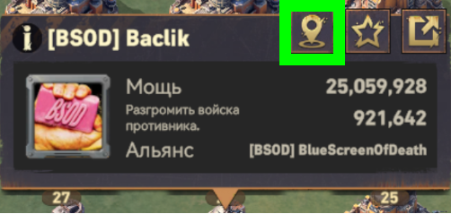
В открывшемся меню метки ты можешь выбрать нужную тебе иконку, ввести описание метки, указать время действия метки в формате ДНИ Д ЧАСЫ : МИНУТЫ (чаще всего нужно указывать только минуты, остальные клетки заполнять не обязательно).
Также есть возможность включить внутриигровое уведомление, поставив отметку в квадратике «Сброс таймера: Автоматически уведомлять участников альянса за 3 м до старта». Выбрав необходимые параметры, нажимай на кнопку «Разместить», после чего метка появится на карте.
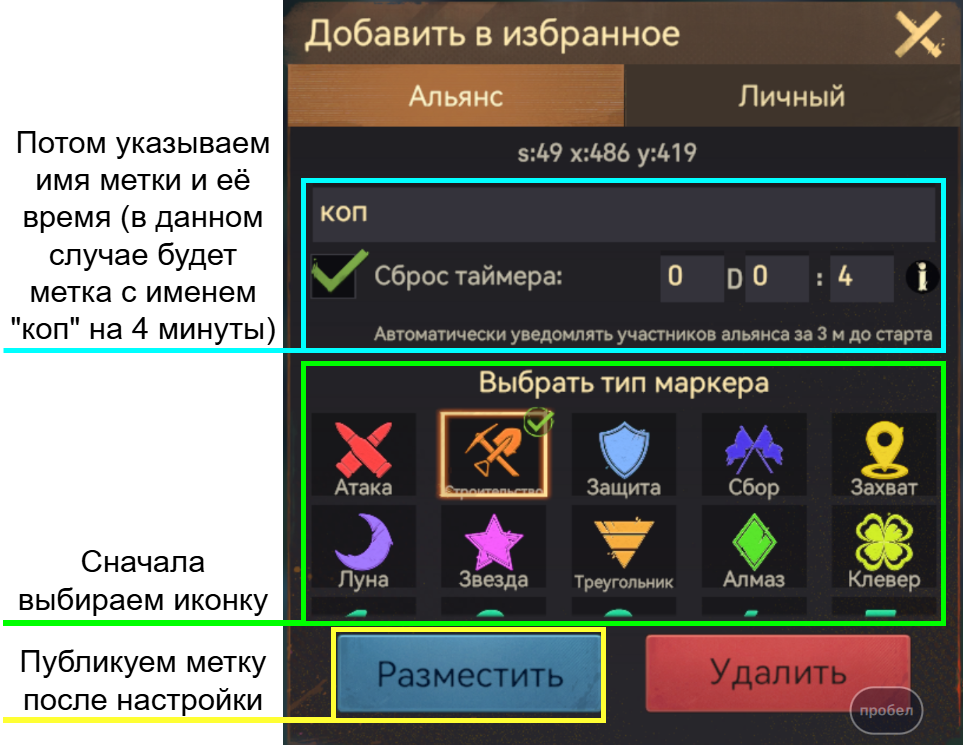
Для того чтобы создать объявление или опрос, необходимо открыть вкладку чата альянса и в правом верхнем углу нажать на иконку мегафона, после чего ты можешь выбрать, что создать - объявление или опрос (см. картинку).
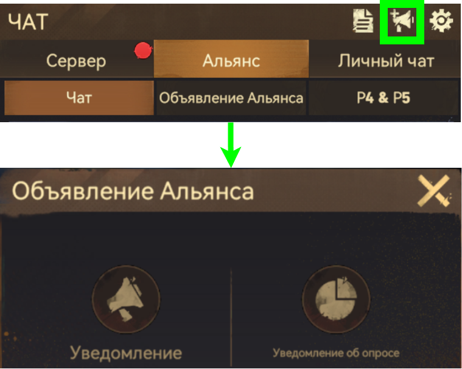
В объявлении вводим необходимый текст (поддерживает текстовую разметку — см. отдельное руководство). Можно также прикрепить картинку.
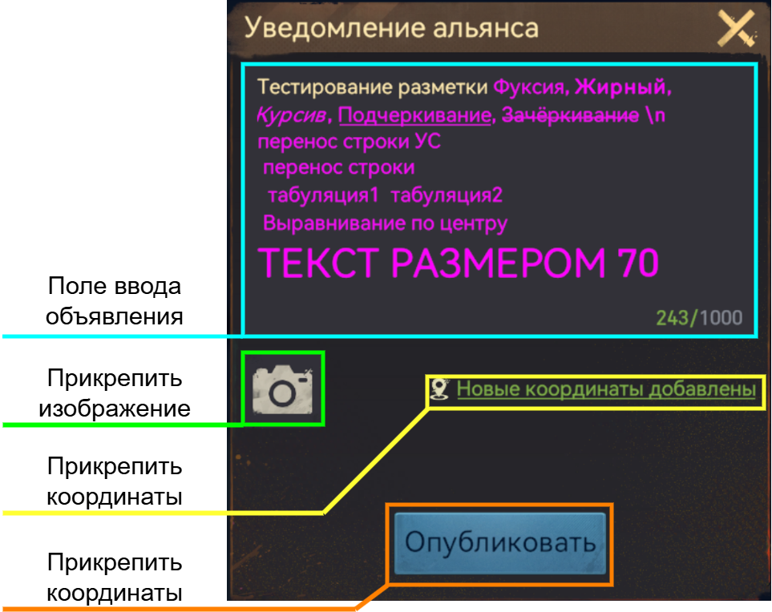
Ещё можно прикрепить координаты города и его области — это можно сделать нажатием на область на карте (в таком случае будут указаны координаты города этой области) или через выбор уровня и последующий выбор города (см. картинку).
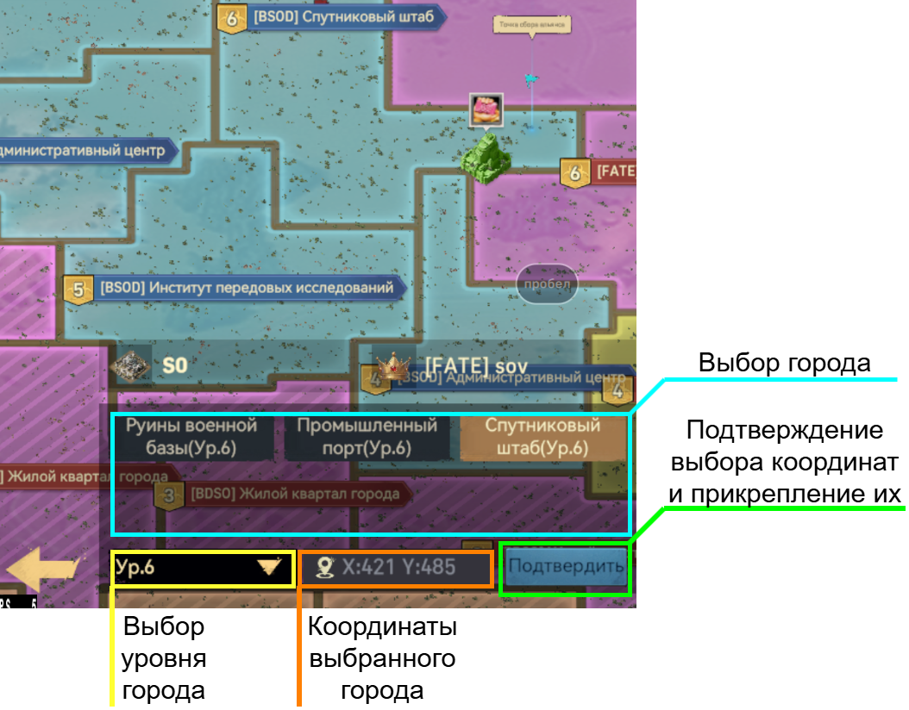
После внесения всей необходимой информации нажимай кнопку «Опубликовать» — объявление опубликуется.
Опрос создаётся следующим образом:
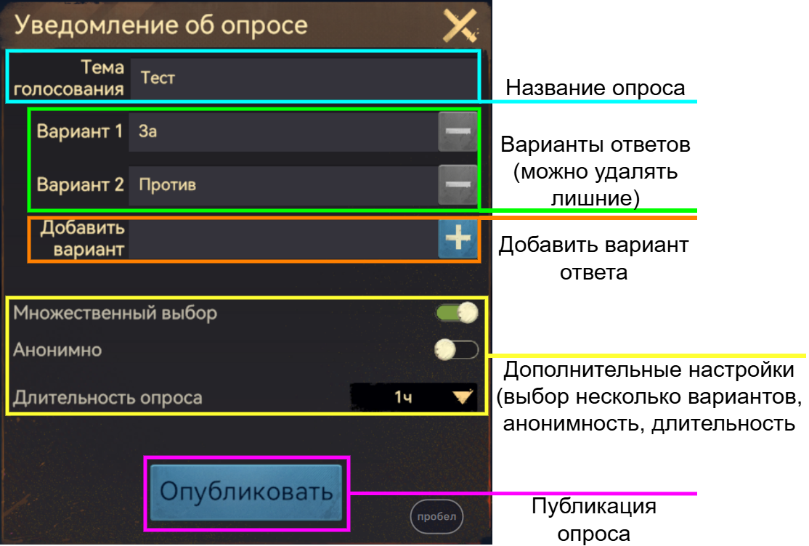
Самое первое в очереди объявление можно сделать срочным — для этого нужно нажать красную кнопку в заголовке объявления (см. картинку). В этом случае форма объявления окрасится в красный цвет, и всем членам альянса придёт уведомление на телефон.
Объявления, которые находятся ниже в очереди, можно перенести в начало очереди — для этого надо нажать синюю кнопку в заголовке объявления. После этого оно СКОПИРУЕТСЯ в начало очереди, и его можно будет сделать срочным.
Для того чтобы удалить объявление или опрос, перейди в него (нажми на него), после чего в правом верхнем углу нажми на значок урны (см. картинку).
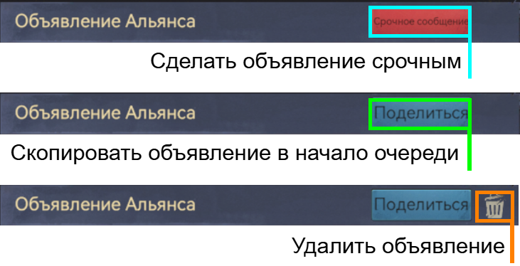
Ежедневно альянсу доступен поезд с наградами. В установленное время любой R4 / R5 назначает офицера эскорта (далее — машинист), как правило из игроков рангов R4 / R5.
Члены альянса (далее — пассажиры) при посадке в поезд передают 3 контракта конвоев машинисту. Машинист, в свою очередь, за полученные контракты (а иногда и за свои контракты и кристаллы — но это компенсируется тем, что ты получаешь ВЕСЬ доехавший груз) должен повысить ранг поезда до оранжевого (минимум за 5 обновлений, 15 контрактов) и найти хорошие грузы. При полной посадке ты должен будешь получить 60 контрактов.
Разрешить все вопросы с поездом ты должен за 20 минут до его отправления — за 15 минут поезд становится недоступным для редактирования. Время отправления поезда указано в правом верхнем углу меню.
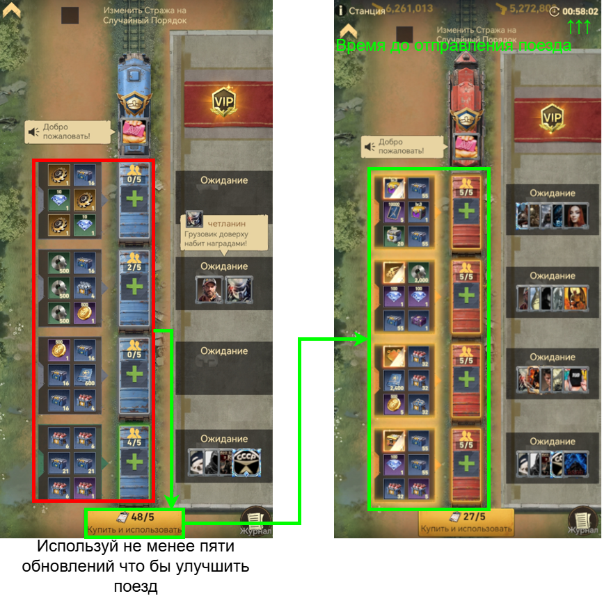
🔍 Контроль и дисциплина: В твоих интересах отслеживать безбилетников и требовать с них положенные 3 контракта. Также следи за тем, чтобы никто не пролез зайцем (не по списку) в поезд и чтобы в вагоне было не более пяти пассажиров. Единственный способ высадить зайца — исключить его из альянса (не забудь принять его обратно). Пассажиров и пожертвованные ими контракты можно посмотреть во вкладке «Журнал».
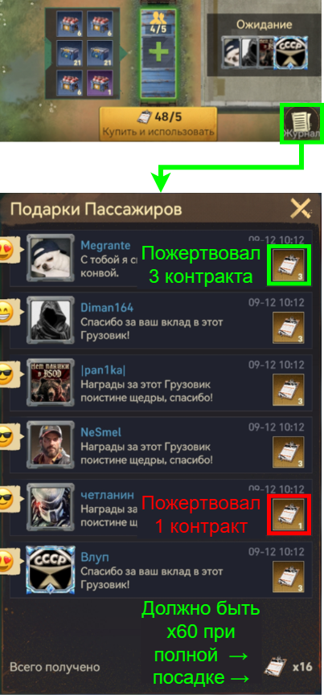
🛡️ Охрана поезда: Ты должен обеспечить охрану поезда — своими силами или пригласив офицера стражи. Если офицера стражи не ожидается, выставляй в охрану свои отряды — тут же можешь включить функцию случайной расстановки отрядов.
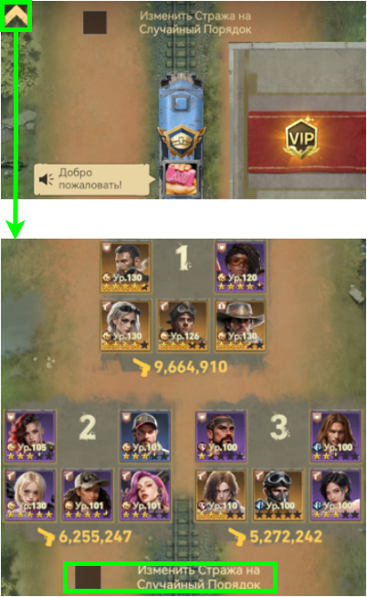
Рекомендуется пригласить офицера стражи — как правило, самого сильного по мощи отрядов игрока в альянсе. Для этого тебе надо нажать на иконку VIP и в меню выбора особого пассажира пригласить офицера стражи (также здесь есть возможность пригласить агента — не актуально, получает такую же награду как и офицер эскорта, но в защите поезда не участвует — не выбирай).
Откроется список членов альянса, в котором они будут отсортированы по ОБЩЕЙ боевой мощи — выбери необходимого игрока, поставив галочку в его строке. После выбери время действия приглашения в охрану (на самом деле, искать и согласовывать офицера охраны требуется заранее, 30 минут ставь потому что офицер охраны может просто-напросто, например, куда-нибудь отойти).
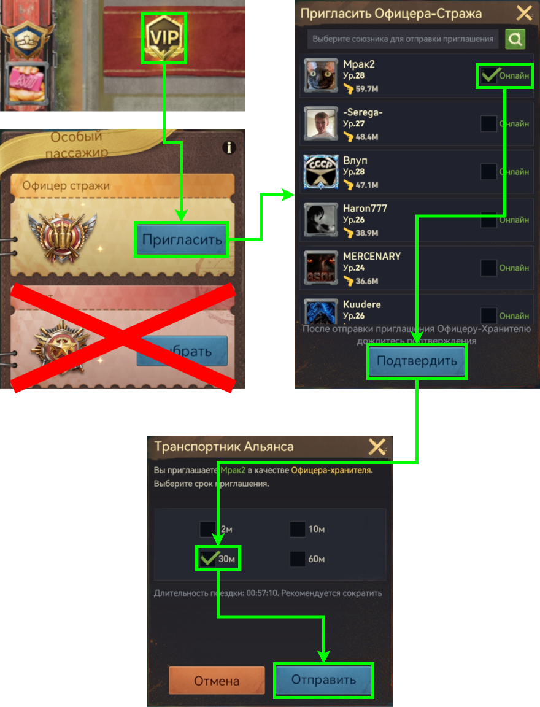
Последнее, что тебе нужно сделать — это выбрать 2 вагона, груз из которых получит в награду офицер охраны. О том, какие вагоны выбирать, спрашивай у него.
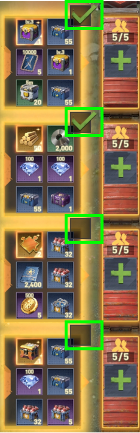
🎉 Счастливого пути!
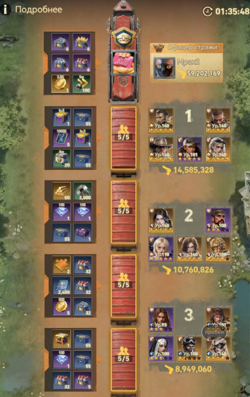
Перед началом засады можно поменять её местоположение по нажатию кнопки с иконкой компаса (см. картинку).
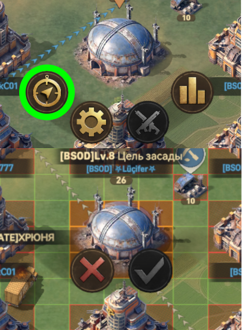
Запустить осаду, выбрать уровень засады и минимальный уровень участвующих в осаде баз можно в разделе «Инцидент» во вкладке «Осада зомби».
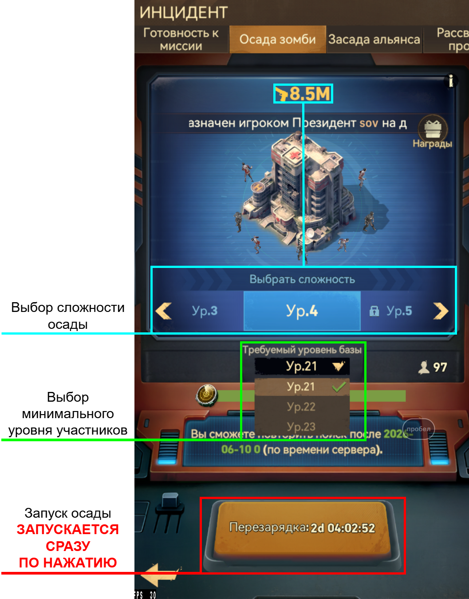
Для того чтобы поставить точку сбора, кликни в любое пустое место на карте и нажми кнопку со стрелками, после чего появится меню подтверждения выбора точки, в котором можно подтвердить выбор или отменить его (см. картинку).
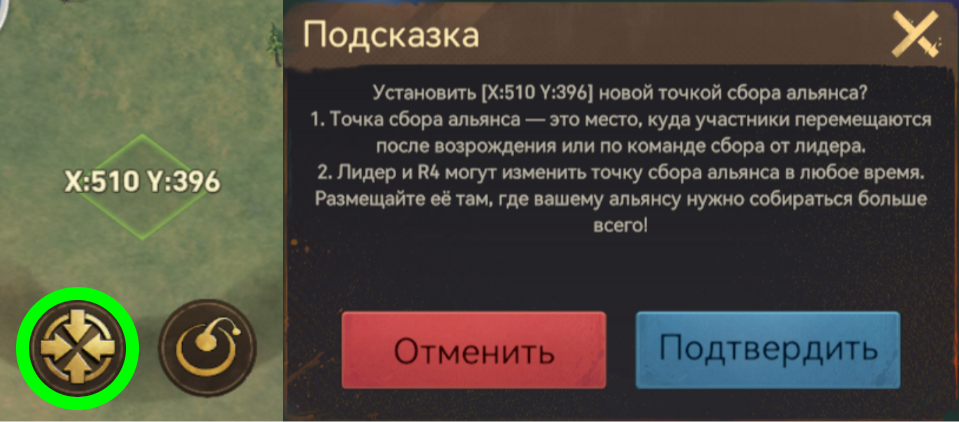
Основной функционал R4 находится в окне альянса. Все имеющиеся в нём функции будут рассмотрены в разделах с пометкой [ОА]. Также в этом окне вверху можно изменить внутреннее объявление альянса по нажатию иконки карандаша в текстовом поле сверху. Внутреннее объявление поддерживает текстовую разметку (см. руководство по текстовой разметке).
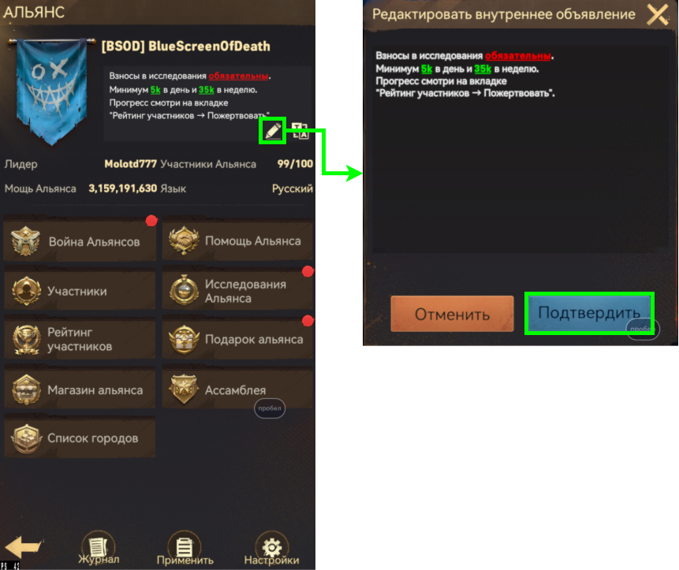
Для просмотра текущего списка заявок на вступление в альянс в окне альянса снизу по центру необходимо нажать кнопку «Применить», откроется список заявок, в котором можно принимать или отклонять заявки на вступление.
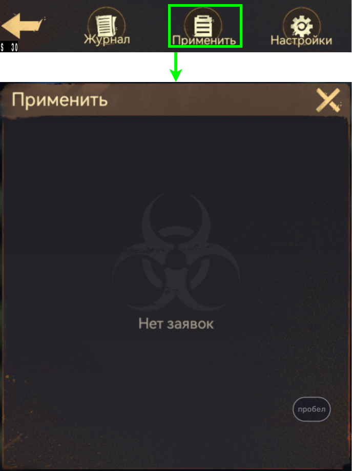
Для изменения ранга участника или удаления его из альянса в окне альянса перейдите в раздел «Участники». Откроется список, отсортированный по рангам. Для управления доступны участники до ранга R3 включительно. Управление каждым участником осуществляется отдельно по нажатию соответствующей кнопки. В меню управления можно удалить участника из альянса, изменить его ранг или открыть переписку с ним.
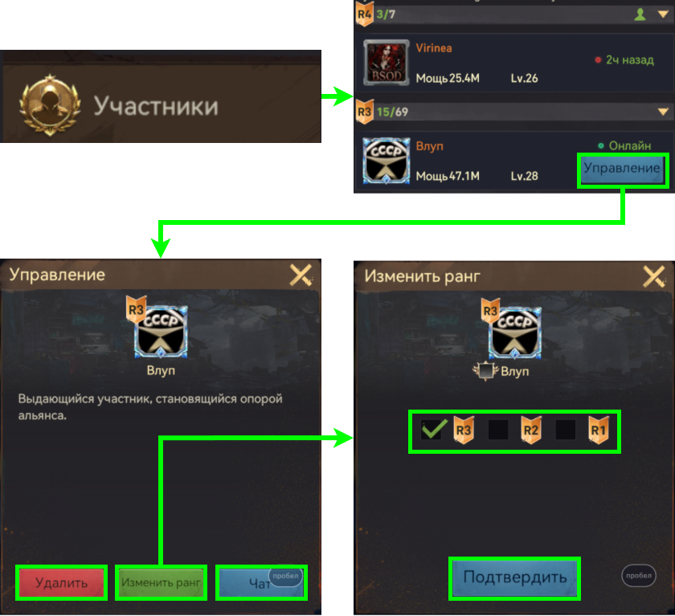
Для выбора приоритета исследования в окне альянса перейдите в соответствующий раздел. Сверху в окне можно выбрать тип исследований, указать одно приоритетное направление для пожертвований или сменить приоритет. При пожертвовании на приоритетное исследование всем членам альянса начисляется на 20% больше монет альянса. Также можно включить функцию автоматического запуска исследований.
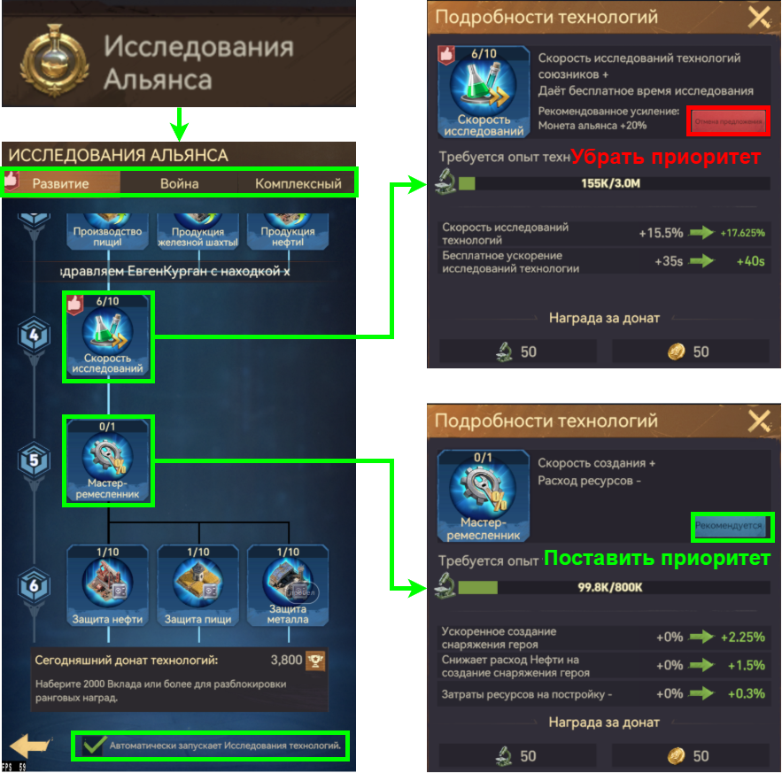
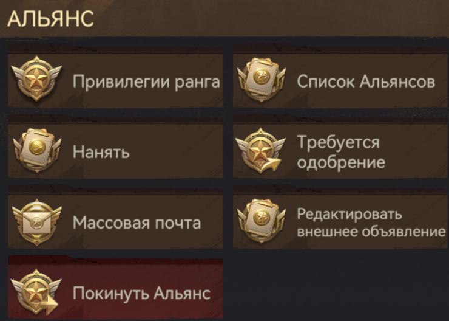
В настройках альянса можно просмотреть возможности каждого из рангов.
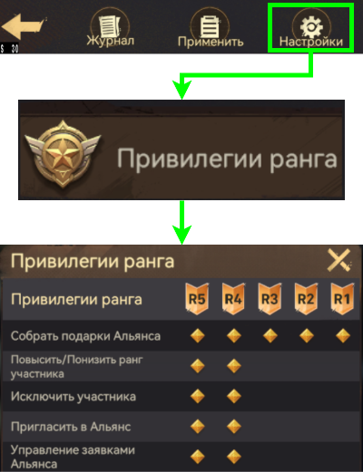
Просмотреть список существующих альянсов и условия приёма в них, искать их по названию.
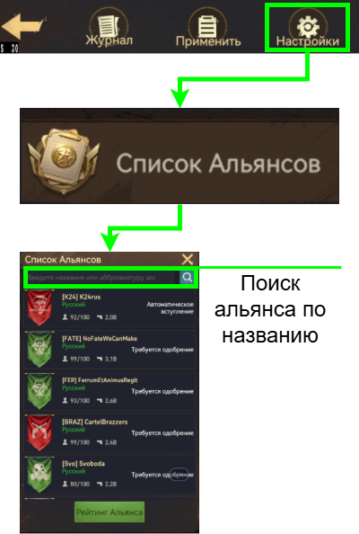
Опубликовать сообщение о наборе в чат сервера (поддерживается текстовая разметка).
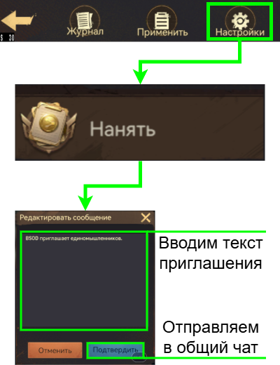
Выбрать режим приёма (по согласованию / автоматический). Текущий статус приёма отображается в виде уведомления и на самой кнопке.
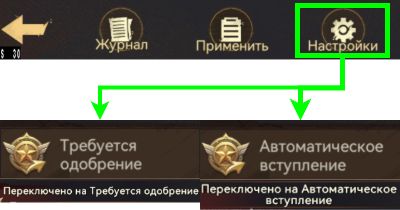
Разослать всем участникам альянса письмо в почте (поддерживается текстовая разметка).
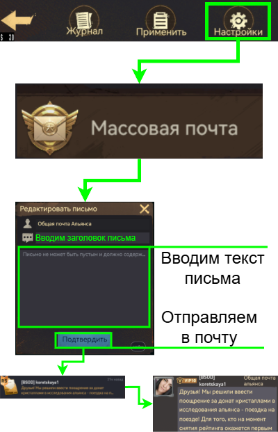
Отредактировать внешнее объявление, которое будет видно другим игрокам при обзоре альянса (поддерживается текстовая разметка).
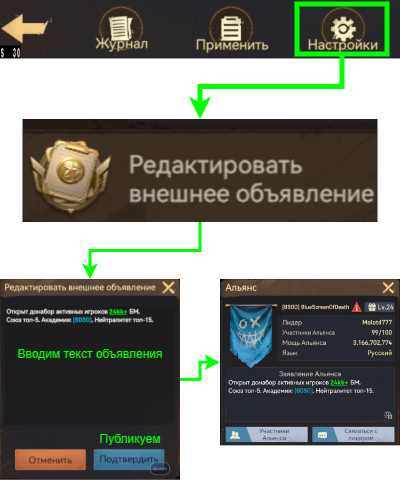
Также на этой странице можно покинуть альянс.